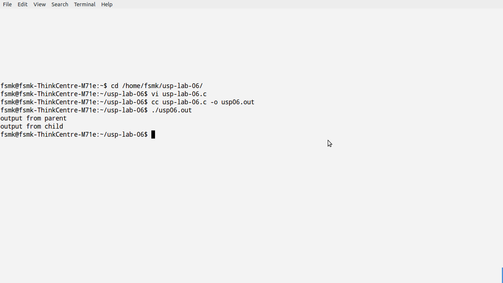
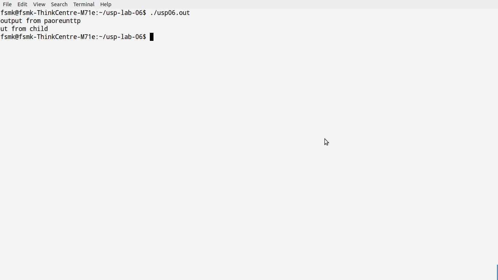

A race condition occurs when multiple processes are trying to do something with shared data and the final outcome depends on the order in which the processes run. The fork function is a lively breeding ground for race conditions, if any of the logic after the fork either explicitly or implicitly depends on whether the parent or child runs first after the fork. In general, we cannot predict which process runs first. Even if we knew which process would run first, what happens after that process starts running depends on the system load and the kernel's scheduling algorithm.
#include<stdlib.h>
#include<stdio.h>
#include<unistd.h>
static void charatatime(char *);
int main()
{
int pid;
if((pid=fork())<0)
printf("fork error\n");
else if(pid==0)
charatatime("output from child\n");
else
charatatime("output from parent\n");
_exit(0);
}
static void charatatime(char *str)
{
char *ptr;
int c;
setbuf(stdout,NULL);
for(ptr=str;(c=*ptr++)!=0;)
putc(c,stdout);
}
Commands for execution:-

